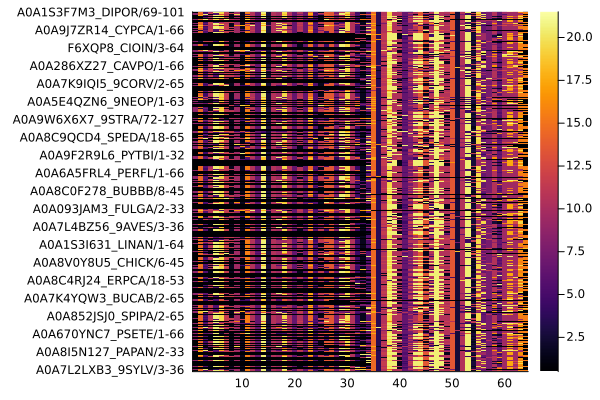
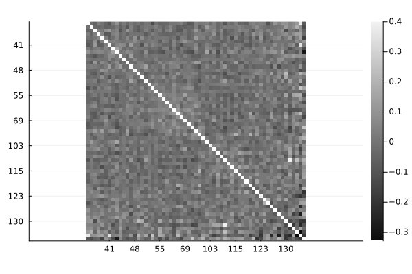

Example
In this simple demonstration, you will see how to calculate ZBLMIp (Z score of the corrected MIp using BLOSUM62 pseudo frequencies) for a Pfam MSA from the Julia REPL or using a MIToS script in the system command line.
MIToS in the Julia REPL
If you load the Pfam module from MIToS, you will get access to a set of functions that work with Pfam MSAs. In this case, we are going to use it for download a Stockholm MSA from the Pfam website and read it into Julia.
using MIToS.Pfam
pfam_file = downloadpfam("PF10660")
msa = read_file(pfam_file, Stockholm, generatemapping = true, useidcoordinates = true)AnnotatedMultipleSequenceAlignment with 3285 annotations : 1630×64 Named Matrix{MIToS.MSA.Residue}
Seq ╲ Col │ 31 34 35 36 37 … 132 133 134 135 136
─────────────────────────┼────────────────────────────────────────────────────
A0A1S3F7M3_DIPOR/69-101 │ - - - - - … K D H R -
A0A9J7ZR14_CYPCA/1-66 │ M E S I S K K K K Q
F6XQP8_CIOIN/3-64 │ M E A I S K - - - -
A0A286XZ27_CAVPO/1-66 │ M E S V A K K K Q Q
A0A7K9IQI5_9CORV/2-65 │ - E T L A K K K Q Q
A0A5E4QZN6_9NEOP/1-63 │ M Y F I S - - - - -
A0A9W6X6X7_9STRA/72-127 │ - - - - - - - - - -
A0A8C9QCD4_SPEDA/18-65 │ - - - - - K K K Q Q
⋮ ⋮ ⋮ ⋮ ⋮ ⋮ ⋱ ⋮ ⋮ ⋮ ⋮ ⋮
A0A093H2F1_STRCA/1-30 │ - - - - - K D K C -
A0A6P7I4H6_9TELE/1-66 │ - E A I A K K K K Q
A0AA35X0W4_GEOBA/1-55 │ - - - - - - - - - -
A0A7K5HUU7_CROSL/2-65 │ - E S L A K K K Q Q
A0A669QRW0_PHACC/3-44 │ - - - - - K K K Q Q
A0A671KHD1_9TELE/1-66 │ M E S I S K K K K Q
A0A2Y9GAS3_NEOSC/1-66 │ M E S V A K K K Q Q
A0A7K7KUL6_9AVES/8-42 │ - - - - - … K D K C -The keyword argument generatemapping of read_file allows to generate sequence and column mappings for the MSA. Column mapping is the map between of each column on the MSA object and the column number in the file. Sequence mappings will use the start and end coordinates in the sequence ids for enumerate each residue in the sequence if useidcoordinates is true.
You can plot this MSA and other MIToS’ objects using the Plots package. The installation of Plots is described in the Installation section of this site:
using Plots
plot(msa)
The Information module of MIToS has functions to calculate measures from the Information Theory, such as Shannon Entropy and Mutual Information (MI), on a MSA. In this example, we will estimate covariation between columns of the MSA with a corrected MI that use the BLOSUM62 matrix for calculate pseudo frequencies (BLMI).
using MIToS.Information
ZBLMIp, BLMIp = BLMI(msa)
ZBLMIp # shows ZBLMIp scores61×61 Named PairwiseListMatrices.PairwiseListMatrix{Float64, false, Vector{Float64}}
Col1 ╲ Col2 │ 35 36 … 134 135
────────────┼──────────────────────────────────────────────────────────
35 │ NaN -0.00725723 … 0.370393 -0.0868666
36 │ -0.00725723 NaN 0.08613 -0.128209
37 │ -0.0550733 -0.0327792 0.0970641 -0.0570833
38 │ 0.02675 -0.0445854 0.145924 -0.0326729
39 │ -0.00760274 -0.0206467 0.147673 -0.16336
40 │ -0.0515405 -0.0585335 0.027283 0.103867
41 │ -0.0910541 -0.0525029 0.344332 0.0207477
42 │ 0.0159806 -0.0365844 0.0354997 -0.125311
⋮ ⋮ ⋮ ⋱ ⋮ ⋮
128 │ 0.0425878 0.00816373 -0.277605 0.201157
129 │ 0.102036 0.0256625 0.0526604 0.0912134
130 │ 0.0947565 0.121162 -0.194107 -0.199521
131 │ 0.044487 0.047995 -0.237891 -0.100083
132 │ 0.0684589 0.0840935 0.151181 -0.0250086
133 │ 0.120951 0.189578 -0.329 -0.119186
134 │ 0.370393 0.08613 NaN -0.194918
135 │ -0.0868666 -0.128209 … -0.194918 NaNOnce the Plots package is installed and loaded, you can use its capabilities to visualize this results:
heatmap(ZBLMIp, yflip = true, c = :grays)
MIToS in system command line
Calculate ZBLMIp on the system shell is easy using the script called BLMI.jl in the MIToS_Scripts.jl package. This script reads a MSA file, and writes a file with the same base name of the input but with the .BLMI.csv extension.
julia BLMI.jl PF14972.stockholm.gz